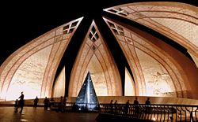

Islamabad
Islamabad (/ɪsˈlɑːməˌbɑːd/; Urdu: اسلام آباد, Islāmābād) is the capital city of Pakistan, and is federally administered as part of the Islamabad Capital Territory. Islamabad is the ninth largest city in Pakistan, while the larger Islamabad-Rawalpindi metropolitan area is the country's fourth largest with a population of about 3.1 million.[7] Built as a planned city in the 1960s to replace Karachi as Pakistan's capital, Islamabad is noted for its high standards of living,[9] safety,[10] and abundant greenery.[11] The city's master-plan, designed by Greek architect Constantinos Apostolou Doxiadis, divides the city into eight zones, including administrative, diplomatic enclave, residential areas, educational sectors, industrial sectors, commercial areas, and rural and green areas which are administered by the Islamabad Metropolitan Corporation, supported by the Capital Development Authority. The city is known for the presence of several parks and forests, including the Margalla Hills National Park and Shakarparian Park.[12] The city is home to several landmarks, including the Faisal Mosque, the largest mosque in South Asia[13] and the fourth largest in the world. Other landmarks include the Pakistan's National Monument and Democracy Square.[14][15][16] Islamabad is a Gamma + global city as rated by the Globalization and World Cities Research Network;[17]. The city has the highest cost of living in Pakistan, and its population is dominated by middle and upper middle class citizens.[9][18] The city is home to twenty universities, including the Bahria University, Quaid-e-Azam University, PIEAS, COMSATS Institute of Information Technology and NUST.[19] The city is one of the safest in Pakistan, and has an expansive surveillance system with 1,900 CCTV cameras.[10][20]
